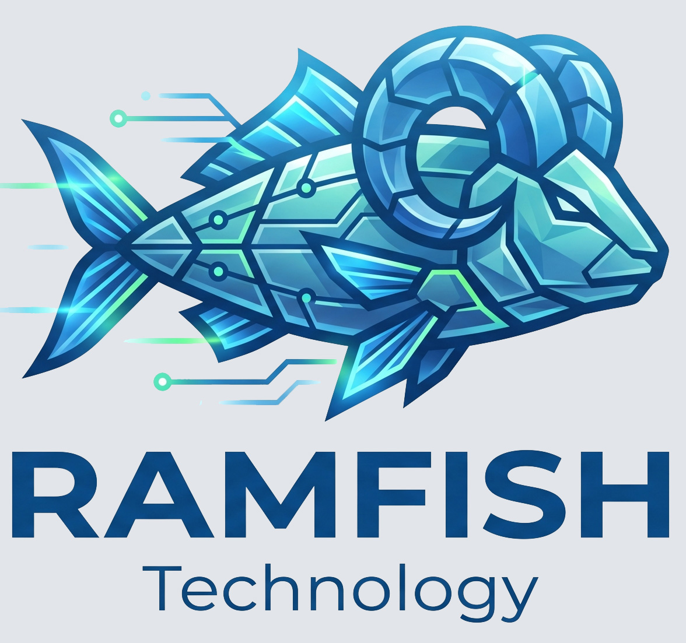
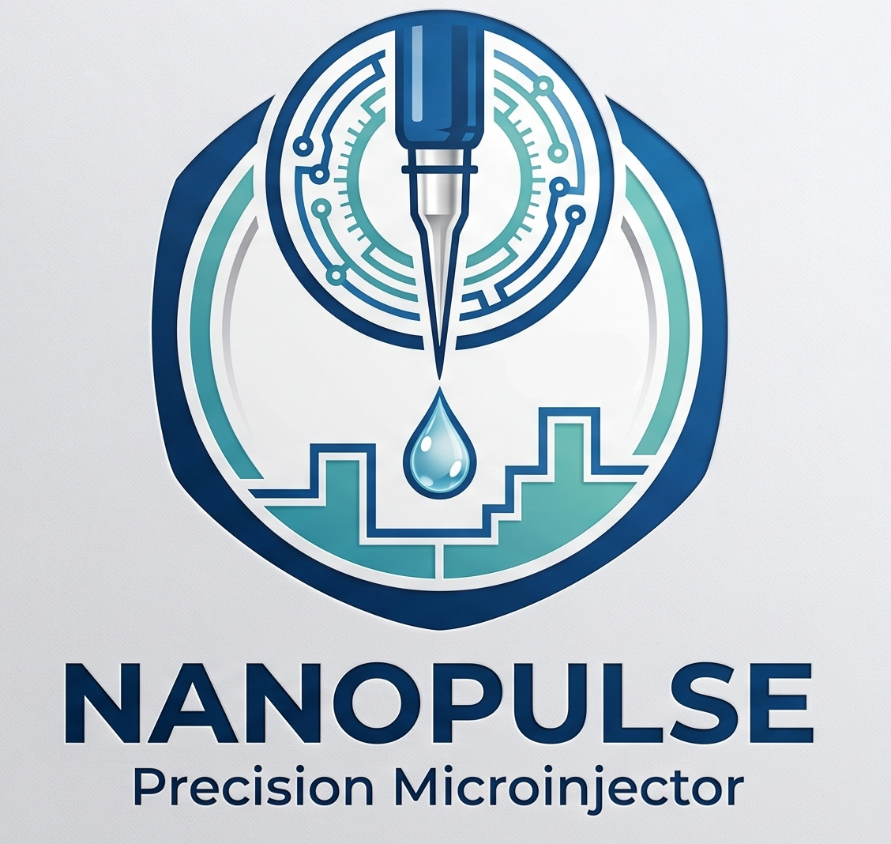
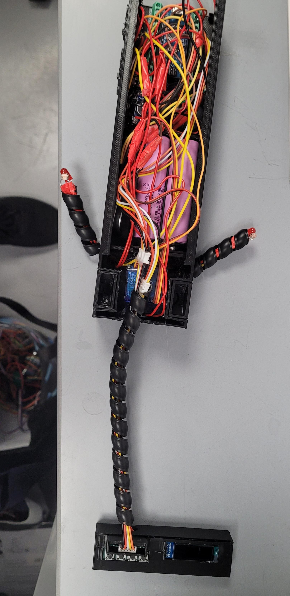

FISHER_α
An open-source automatic fish feeder for behavior experiments. A light cue, a timed feeding and a count of every trial, all in a small box that sits on the tank.

RAMFISH
Rapid Amplified Multiplexed FISH
An automated machine for multiplexed FISH. It handles the liquids, keeps the temperature right, and uses live imaging to time each staining round.
- Detects many mRNAs in one tissue
- Affordable, accessible and easy to use
- Faster, automated protocol

NanoPulse Microinjector
Precise liquid delivery for CRISPR
A custom-built injector that pushes out tiny, exact volumes, from nanoliters to microliters, using a small pump driven by a fine-step motor.
- About 0.03 µL per pulse
- Programmable injection settings
- Modular pump design
- Made for embryos and tissue

FISHER_α
Flexible Instrument for Stimulus-controlled Habituation and Experimental Reinforcement
An open-source automatic fish feeder for behavior studies. It pairs each feeding with a light cue, so researchers can study learning, habits and drug effects.
- Light cues paired with feeding
- Battery powered, runs unattended
- Counts every trial

CORN-DRIVE
Closed-loop Observation and Robotic Nurture platform
A robotic platform that watches corn plants grow, senses their environment, and adjusts care automatically over time.
- Cameras and AI spot problems early
- Environmental sensing
- Adjusts water and nutrients on its own
- Tuned for corn plants